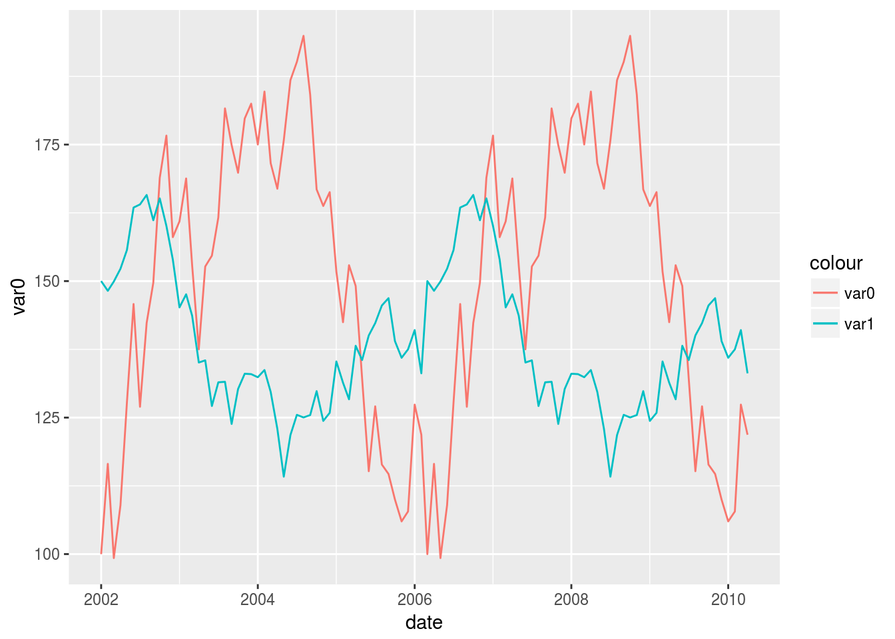
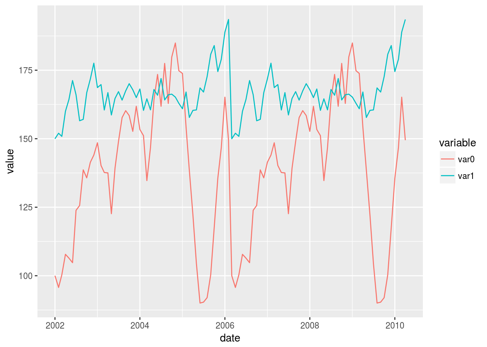

Q: 1 ggplot2で同一グラフに2変数の折れ線グラフを描きたい
1.1 Q
このようなデータが手元にあります:
test_data <- data.frame(
var0 = 100 + c(0, cumsum(runif(49, -20, 20))),
var1 = 150 + c(0, cumsum(runif(49, -10, 10))),
date = seq.Date(as.Date("2002-01-01"), by="1 month", length.out=100))この時系列変数var0とvar1の両方共を、dateをx軸にしてggplot2でどうやったら描けますか? できればvar0とvar1の色を変えて、さらに凡例も付けれたら嬉しいです。
1.2 A
もし変数が少ないのであれば、マニュアルで別々に作成ビルドアップできますよ:
library(ggplot2)
ggplot(test_data, aes(date)) +
geom_line(aes(y = var0, colour = "var0")) +
geom_line(aes(y = var1, colour = "var1"))
一般的なアプローチとしては、tydyrパッケージを利用してデータを縦型(long format)に変換していく方法があります:
library(tidyr)
library(ggplot2)
test_data_long <- tidyr::gather(test_data, key="variable", value = value, -date) # 縦型に変換
knitr::kable(head(test_data_long, 6))| date | variable | value |
|---|---|---|
| 2002-01-01 | var0 | 100.00000 |
| 2002-02-01 | var0 | 86.89299 |
| 2002-03-01 | var0 | 67.68766 |
| 2002-04-01 | var0 | 79.82263 |
| 2002-05-01 | var0 | 79.43657 |
| 2002-06-01 | var0 | 83.91901 |
ggplot(data=test_data_long, aes(x=date, y=value, colour=variable)) +
geom_line()
データを縦型のデータに変換し、var0とvar1を分けるための変数で色分けを指定すればこのようになります。
1.3 参考
この記事は、StackOverflowに投稿された以下の記事をベースに、コードを一部改変して翻訳して作成しました: - r - Plotting two variables as lines using ggplot2 on the same graph - Stack Overflow
関連ドキュメント: - geom_line. ggplot2 0.9.3.1